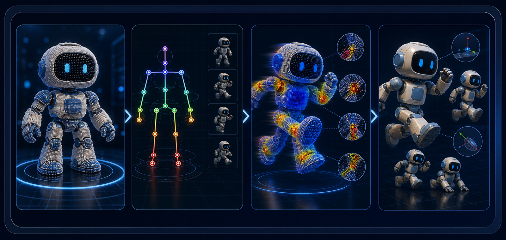

为什么 mesh skinning 不能直接套到 Gaussian 上？
学生需要解释 Gaussian primitive 的 center、local frame、normal 和 anisotropic scale 在动画中如何共同影响渲染质量。
研究 rigged Gaussian asset 在目标动作下如何更新位置、方向和尺度，使动画渲染更稳定。

Gaussian primitive 不只是一个点，还带有方向、尺度、透明度和外观；动画时只移动中心点，容易产生拉伸、模糊和关节破裂。
这个课题更适合数学、几何和图形学基础较强的学生。它的展示效果强，但真正的研究价值来自对变形规则和 artifact 的严谨分析。
学生需要解释 Gaussian primitive 的 center、local frame、normal 和 anisotropic scale 在动画中如何共同影响渲染质量。
可以提出 frame / normal update、bounded scale update 或 joint artifact reduction 方法，并通过对比证明它优于 center-only LBS。
包括 pose rendering demo、关节 artifact crop、temporal stability 曲线、ablation study、失败案例分析和 conference-style paper。
该课题的对象、辅助信号、输出资产和诊断结果如下。
rest-pose Gaussian asset、skeleton、per-Gaussian skinning weights 和 target pose。
center-only LBS 只移动 Gaussian center，用于暴露最简单方法的局限。
同时更新 Gaussian center、local frame、normal 和 anisotropic scale。
多姿态 animation frames、joint artifact crop、temporal stability 对比。
传统 skinning 通常作用在 mesh vertices 上；Gaussian asset 的 primitive 还包含 local frame、anisotropic scale 和 appearance。
如果变形规则没有更新这些属性，渲染中的 splat 支撑区域可能与新姿态不一致，导致关节附近 artifact。
成果由可运行代码、可视化结果、对比实验和 conference-style paper 组成。
研究过程按由浅到深推进，每个阶段都对应可检查的中间产物。
理解 mesh LBS 与 Gaussian primitives 的差异。
实现 center-only Gaussian LBS，作为最简单 baseline。
加入 local frame / normal update，观察关节和表面方向是否更稳定。
设计 bounded scale update，减少 anisotropic Gaussian 的异常拉伸。
渲染多组 pose，比较 temporal stability、joint artifact 和视觉质量。
技术部分围绕模型输入、监督信号、评价指标和下游验证展开。
只移动 Gaussian center，用于暴露最简单方法的局限。
将 blended rotation 作用到 local frame 和 normal，使局部方向随骨骼变化。
根据变换对 anisotropic scale 做受控更新，减少 joint 附近拉伸 artifact。
评价指标既要衡量渲染质量，也要解释动画中最容易被观察到的拉伸、破裂、闪烁和抖动。
| 指标 / 观察项 | 技术含义 | 直观解释 |
|---|---|---|
| Deformation LPIPS | posed rendering 与 oracle rendering 的 perceptual difference。 | 目标姿态下渲染出来的图像，和理想参考图在视觉感知上差多少。 |
| PSNR / SSIM | posed rendering 的图像质量。 | 动画每一帧是否清晰、结构是否保持稳定。 |
| Surface Distortion | 变形后 Gaussian support 是否异常拉伸。 | 角色或物体移动时，表面是否被拉长、压扁或变形得不自然。 |
| Temporal Stability | 连续 pose 下是否闪烁或抖动。 | 把动画连续播放时，画面是否稳定，是否出现跳动或闪烁。 |
| Joint Artifact Score | 关节附近 artifact 的程度。 | 胳膊、腿、椅子连接处等弯曲区域是否破裂、模糊或出现空洞。 |